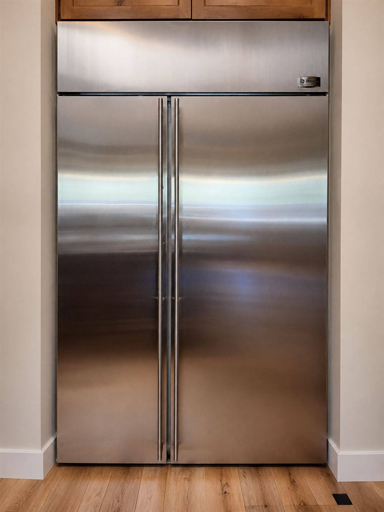
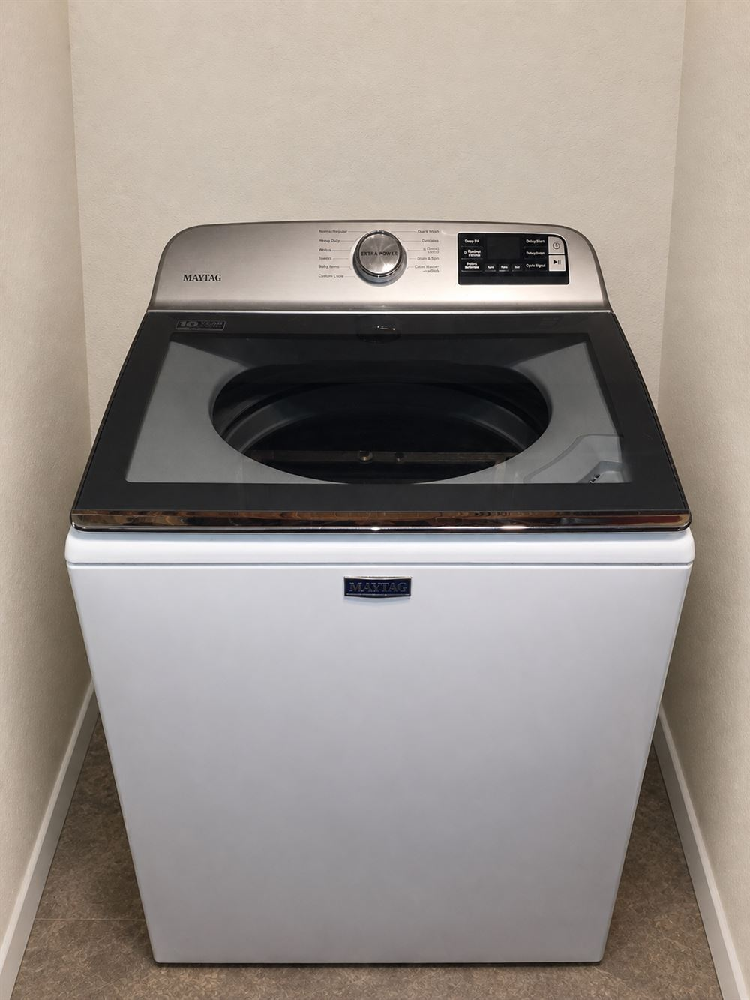
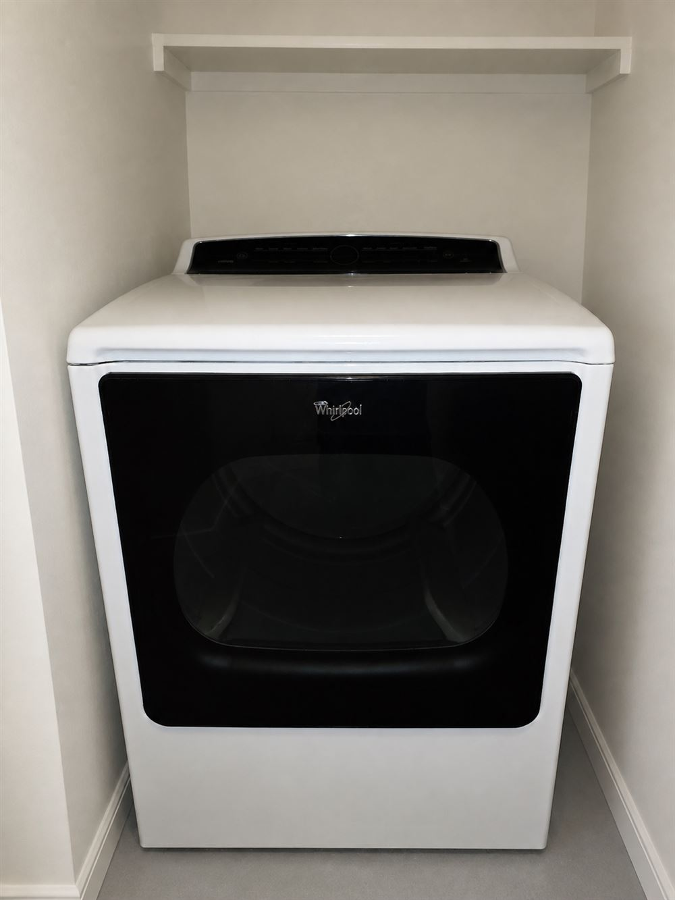
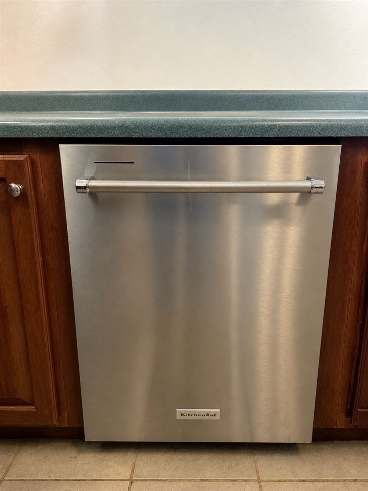
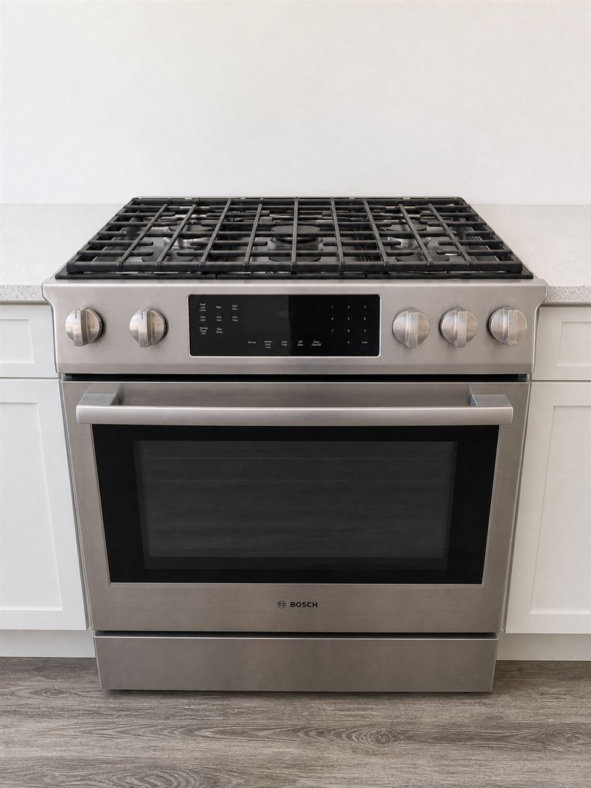
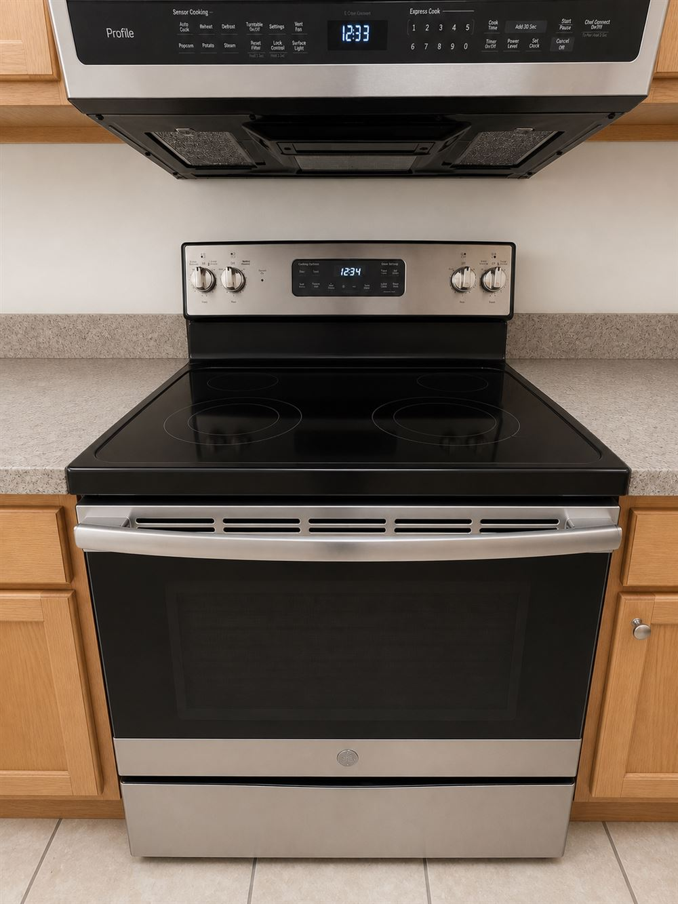

Tucson appliance repair
Honest answers.
Experienced hands.
Dependable appliance repair backed by 26 years of hands-on service experience.
Now scheduling in northeast Tucson, Catalina Foothills, Oro Valley and surrounding communities.
Business hours: Monday–Friday, 8:00 AM–5:00 PM.
How we help
Practical service for the appliances you depend on.
We focus on careful diagnosis and straightforward recommendations. We’ll explain the likely repair cost and your options so you can decide whether repairing the appliance makes sense.

Refrigerators

Washers

Dryers

Dishwashers

Ranges & ovens

Other major appliances
Brands we commonly service
Whirlpool · Maytag · KitchenAid · Amana · Frigidaire · Electrolux · Bosch · LG · Samsung · GE · GE Profile · Monogram
Additional brands may be serviced depending on the appliance, model and parts availability.
Tucson service area
Local appliance repair across greater Tucson.
Now scheduling appliance repair in Tucson, Oro Valley, Catalina Foothills and nearby communities. Service includes refrigerators, freezers, washers, dryers, dishwashers, ranges, cooktops and ovens.
Before we schedule
Send three simple details.
- Your service addressSo we can confirm availability and route your appointment.
- A model-tag photoA clear photo helps identify the exact appliance and prepare for the call.
- What the appliance is doingA brief description, error code, sound or symptom is helpful.
Launch special
$25 off labor
Schedule by September 15, 2026 and complete a qualifying repair.
Applies to completed repair labor only. Excludes parts, diagnostic-only appointments and previous service. Cannot be combined with another offer.Why House & Hand
Experience without the runaround.
House & Hand Appliance Co. was built around a simple idea: people deserve skilled service, honest explanations and respect for their homes.
With 26 years in appliance service, the goal is not to sell the biggest repair. It is to identify the problem, explain the options and help you make a sensible decision.
Need appliance help?
Tell us what is happening.
Send your address, a model-tag photo and a short description. We will confirm whether your location and appliance are within our current schedule.